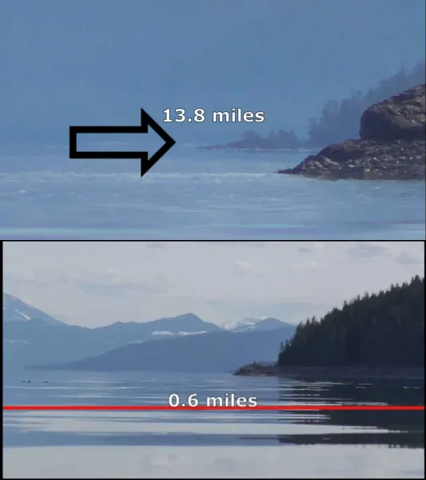

BoxOps
Hub for FE geometry, science, observations, citations and data points.
Geometry
New Black Swan Observation
Citation: bmlsb69 yt https://youtu.be/WXNjki9ohWA?si=LNLhBavPdiDrsWcJ
Data Point: 1.5 Observer Height, 31.82 mile horizon, 613 FT missing curve of 85 FT island, horizon 2000% beyond globe geometric limitation of 1.5 miles, requires a globe radius of 1.8 MILLION!


Black Swan Canada Observation
Citation: Heath Carmody https://youtu.be/MVKmLpV5Ltc?si=e5AEO28gES6fQK_f
Data Point: 3 INCH observer height, 13.8 mile horizon, Horizon 2200% beyond globe 0.6 mile geometric limitation

Distance to Horizon Calculator
Science
Dive into the world of exploration, where data points converge to reveal deeper truths.
Stay updated with the latest observations that shape our understanding.